Livestock Disease Control Methods Explained 2023 Edition Nyoike Live Lesson 01 09 23 Part 10
Video ID: -FehjRm_b60
URL: https://www.youtube.com/watch?v=-FehjRm_b60
Task 1: Explain the different methods of parasite and disease control in livestock.
Subtask 1.1
Description: Describe the process of deworming, including the use of drenching guns.
Timestamp: 130.44 s
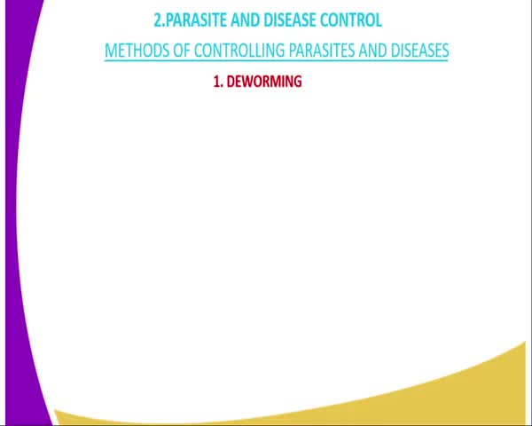
The video frame is titled "Methods of Controlling Parasites and Diseases" and discusses deworming.
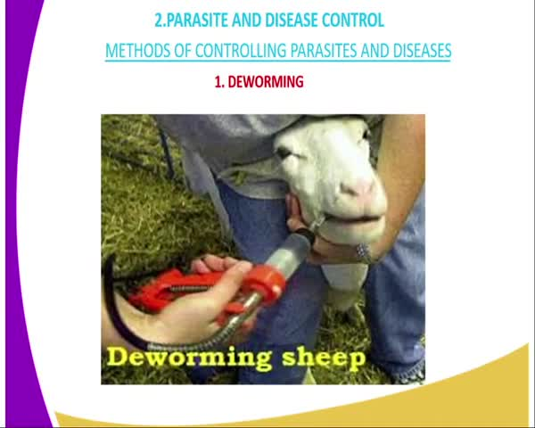
A person is deworming a sheep with a red device.
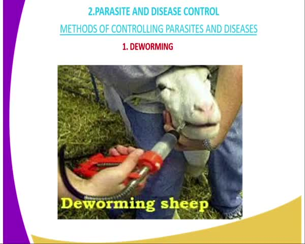
A person is deworming a sheep with a deworming tool.
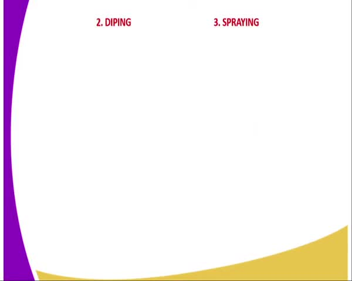
The video frame shows a white background with a purple and yellow curved design on the left side.
Subtask 1.2
Description: Explain the method of dipping for controlling external parasites.
Timestamp: 156.94 s
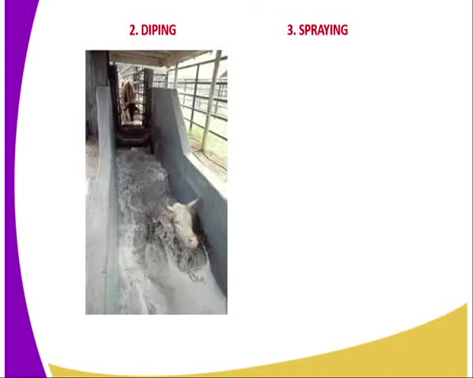
A cow is being dipped in water in a trough.
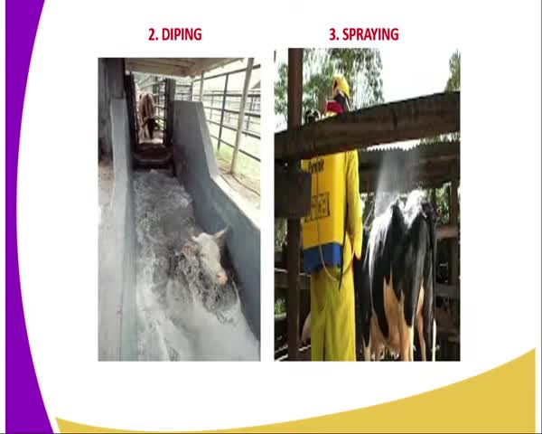
The video shows two different methods of washing cows: dipping and spraying.
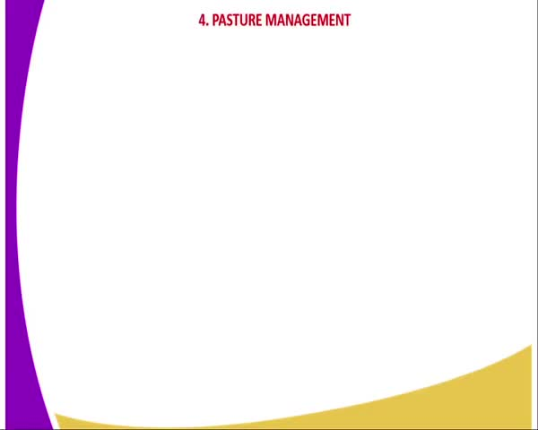
The video frame shows a slide with the title "Pasture Management" and a purple and yellow background.
Subtask 1.3
Description: Describe the pasture management techniques for controlling parasites.
Timestamp: 187.44 s
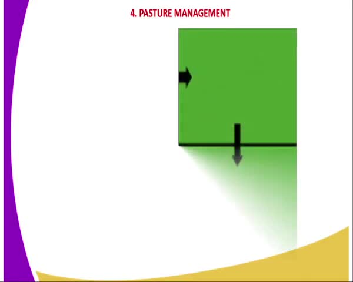
The video frame shows a green square with an arrow pointing downwards, indicating a downward trend or decrease.
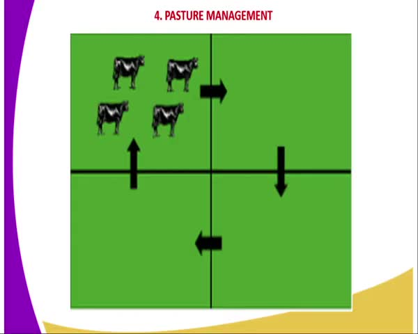
The video frame shows a diagram of pasture management with arrows indicating movement of cows.
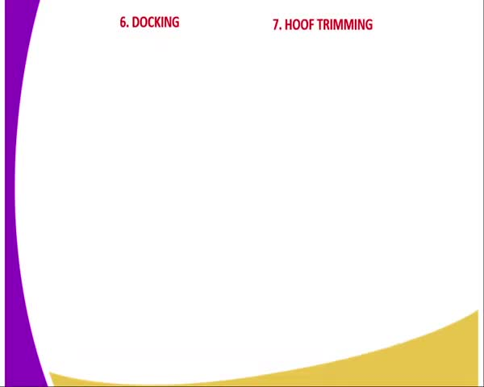
The video frame shows a white background with a purple and yellow curved design on the left side.
Task 2: Describe other livestock management practices for disease control.
Subtask 2.1
Description: Explain the method of docking to control blue fly infestation.
Timestamp: 215.44 s
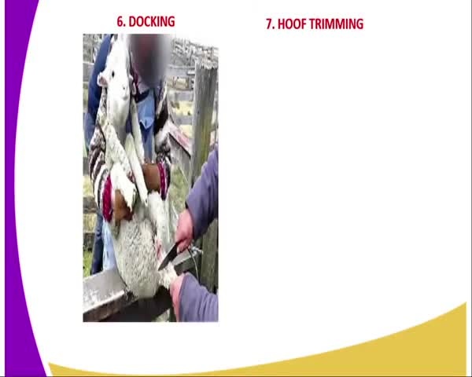
A person is holding a lamb while another person is trimming its hooves.
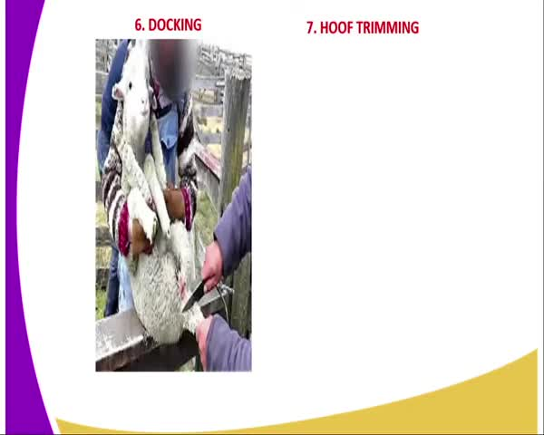
The video shows a person docking a sheep's tail.
Subtask 2.2
Description: Describe the hoof trimming process to control hoof rot diseases.
Timestamp: 228.94 s
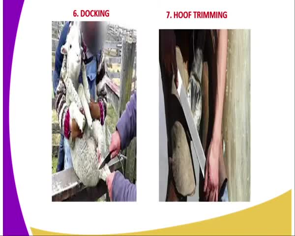
The video frame shows a person holding a lamb and cutting its tail, while another person is trimming its hooves.
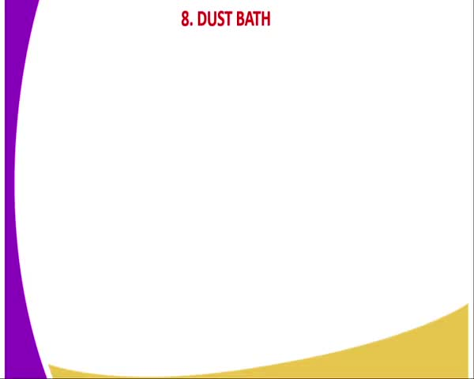
The video frame shows a slide with the title "8. DUST BATH" and a purple and yellow curved design.
Task 3: Describe the methods of vaccination used in livestock.
Subtask 3.1
Description: Explain the injection method of vaccination.
Timestamp: 289.44 s
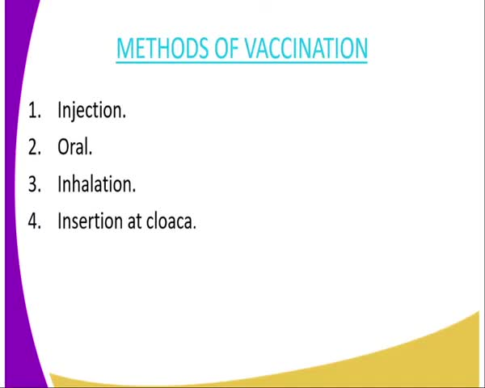
The video frame shows a list of methods of vaccination, including injection, oral, inhalation, and insertion at the cloaca.
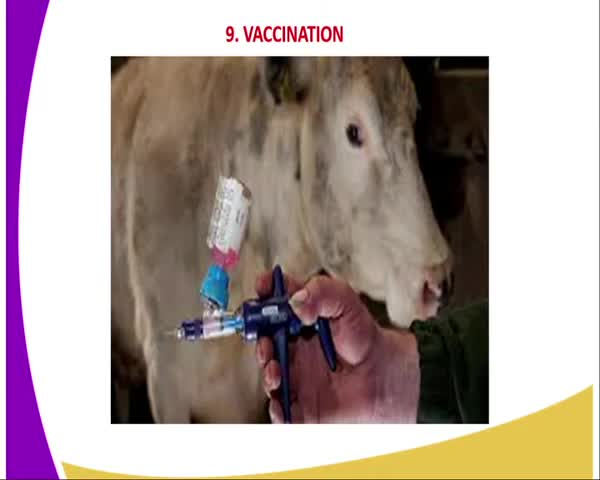
A person is giving a cow a vaccination.
Subtask 3.2
Description: Describe the oral method of administering vaccines.
Timestamp: 303.44 s
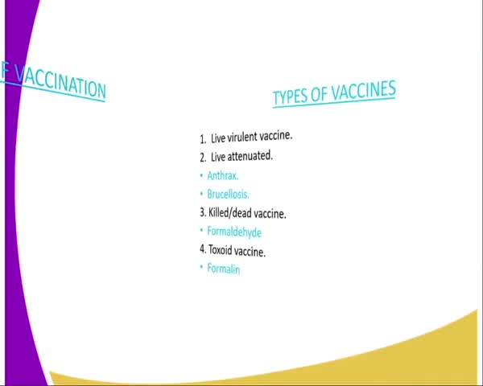
The video frame shows a slide with the title "VACCINATION" and a list of types of vaccines.
Subtask 3.3
Description: Explain the inhalation method of vaccination.
Timestamp: 318.94 s
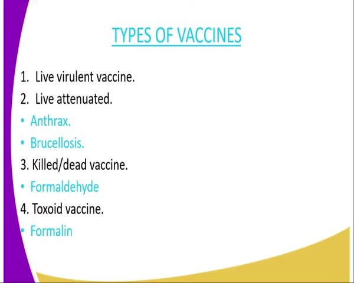
The video frame shows a list of different types of vaccines.
Task 4: Discuss the types of vaccines and their properties.
Subtask 4.1
Description: Describe the live variant vaccine and its properties.
Timestamp: 326.44 s
No images available for this subtask.
Subtask 4.2
Description: Discuss the attenuated vaccine and its examples and properties.
Timestamp: 362.44 s
No images available for this subtask.
Subtask 4.3
Description: Explain the killed vaccine and its use.
Timestamp: 402.44 s
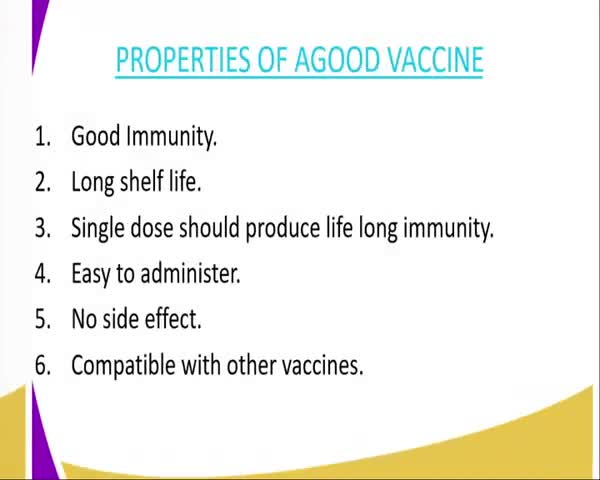
The video frame shows a list of properties of a good vaccine.
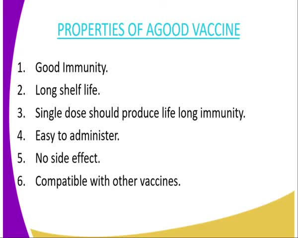
The video frame lists the properties of a good vaccine.